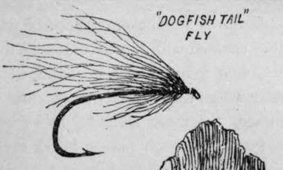
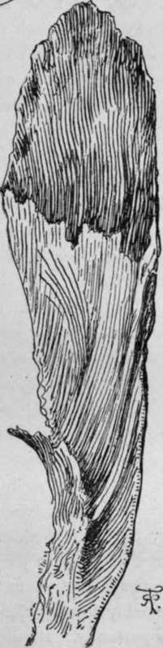
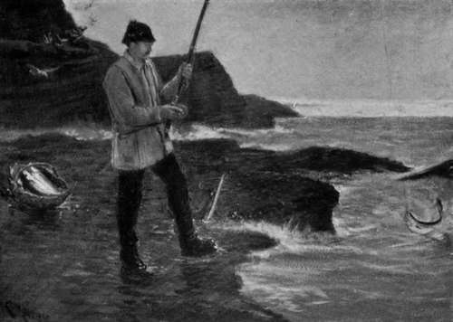

Fly Fishing In The Sea. Part 7
Description
This section is from the book "Sea Fishing", by John Bickerdyke. Also available from Amazon: Sea Fishing.
Fly Fishing In The Sea. Part 7
In the Orkneys flies are by no means a modern innovation, the local fishermen finding that these large double-winged flies will kill lythe and saithe when red and white rags fail. A single set of wings are not found large enough to cover the medium-sized cod hooks which are used for the larger fish. I must confess that these very large flies are not as a rule cast from a rod, but are used as whiffing baits from a boat which for saithe is worked on the edge of the tide, the line being somewhat heavily leaded.
Anyone who is accustomed to dress flies will see that baits for lythe and saithe may be made of any materials which are to be had, and wherever there is an old hearthrug, a mop-head, a coloured blanket, a poultry run, or a red-haired child, materials of some kind are forthcoming. I once caught some trout on Dartmoor with a fly made of no better materials than some white darning worsted and a quill pen, but I used it at night during a spell of dry hot weather.
For small fish a white fly does well over a dark bottom ; and a greyish-brown fly, dark wing, over sand. Another good fly is made with a grey-brown turkey's feather, first dipped in turmeric to give it a yellowish shade ; body either red and black barred, or peacock harl.
A most killing fly, shown in the illustration, is made from the tail of a dogfish, after drying. It will take when all others fail, owing possibly to the peculiar glistening of the fibres in the water. It can easily be made from the following directions : Dry the tail end of a dogfish by hanging up in the wind (putting on a little salt if the weather is hot, to prevent it from going bad). When the tail fin is quite dry, cut it off close to the body and tear off the dry skin from each side. This will leave the centre part of the fin composed of some fibrous rags with possibly a little dry flesh adhering. This flesh is removed by the Orkney fishermen by soaking in their mouths and stripping between their teeth, holding one end of the fibres in their hand. Possibly maceration in water and removal by scraping with a blunt knife would do nearly as well. The result is from each tail a bunch of bright, whitish-yellow, fibrous matter, each fibre of which is stouter than an ordinary pig's bristle, but softer, and shines with a lustre like that on very bright seal's fur. This, when dry, is simply tied on a hook of the necessary size, just as the ordinary white feather would be. In the water it softens and shines, and fish will take it when they refuse the common white fly. It lasts a long time if dried after fishing, so that the hook does not rust it. On the north-west coast of Scotland I found a red phantom such an extremely killing bait for lythe, i.e. pollack, that I should imagine a large red fly would be very deadly.
Lythe and cuddies, when close in shore and gorged with food, sometimes take a small fiery brown Palmer when white flies are not looked at. Mr. Moodie-Heddle tells me that he has taken a score or two in this way when people fishing close to him could get few or none.
DOGFISH-TAIL FIBRE FLY.
There is much more chance of catching large pollack than large coalfish with the fly cast with fly rod, because the former are often found in large quantities in comparatively shallow water where rocky points stretch out some distance under the surface, the most favoured rocks being those covered with seaweed. In such places, in the evening, large fish will come with a plunge like salmon, and go down again head foremost to seek shelter among the weeds. I need hardly say that the tackle must be very strong, and the rod proportionately stiff.
For the little cuddies, in which term I believe the Scotch include both lythe and coalfish, though some ichthyologists limit the word to the latter variety, quite fine tackle can be used. In the north it is a common thing to catch five or six dozen of these little fish on a calm summer's evening with a white fly.
Large coalfish are commonly found in seven to ten fathoms of water in or at the edge of a tideway, and, unless they are tempted to the surface by shoals of sand-eels or other fry of some kind, are not very get-at-able with the fly rod. The smaller fish, however, varying from half a pound to three pounds, the billet of Yorkshire, which are favoured with the extraordinary variety of local names given in the remarks on coalfish, occasionally afford really splendid sport with the fly. In the introductory chapter I referred to the very excellent fly fishing I used to have from Filey Brigg, shoals of billet coming close to the shore and taking the fly as quickly as I could cast it to them. It is when these fish are thus greedily feeding close to the rocks that the fly fisher has his opportunity. In the sea wherever they are found it is always well to be prepared with a fly rod and a suitable fly, and the whitebait fly (p. 148) is the best, so far as I know, but some prefer a piece of fish-skin.
'Taking The Fly As Quickly As I Could Cast It'.
The last time I sea-fished was in a Norwegian fjord. I was using a paternoster and catching whiting, flat fish, and codlings, but with a fly rod I might have had much better sport, for every few minutes large shoals of billet were breaking the surface and beating it into foam, splashing about after some smaller fish which they were pursuing. Gulls hover over billet as they do over the bass, and immediately the coalfish appeared, the birds came swooping down from their resting places on the mountain-side, and shrieked and fought for the small fry.
Continue to:
Tags
fishing, hooks, bait, fishermen, spanish mackerel, mackerel fishing